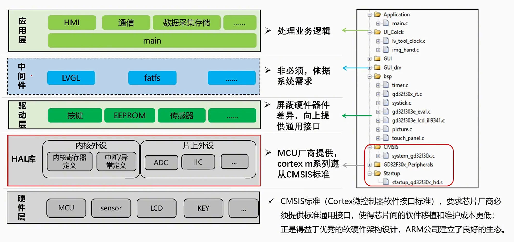

<!DOCTYPE lake>
<h2 data-lake-id="tK2rw" id="tK2rw"><span data-lake-id="ued833fa4" id="ued833fa4">嵌入式软件通用架构</span></h2><p data-lake-id="uf9af097f" id="uf9af097f"></p><h2 data-lake-id="KNt2W" id="KNt2W"><span data-lake-id="u2eb3410c" id="u2eb3410c">库</span></h2><p data-lake-id="u3795602b" id="u3795602b"><span data-lake-id="ue0776100" id="ue0776100">标准外设库（Standard Peripheral  Library）和HAL库（Hardware Abstraction Layer Library）是两种不同的库，它们在嵌入式系统开发中发挥不同的作用。它们通常用于不同的层次，但也有关联的部分。</span></p><h3 data-lake-id="N00nR" id="N00nR"><span data-lake-id="ubf45ee0c" id="ubf45ee0c">SPL库</span></h3><p data-lake-id="u355a0aa0" id="u355a0aa0"><span data-lake-id="u658d4c3e" id="u658d4c3e">标准外设库，</span><strong><span data-lake-id="ucde814de" id="ucde814de">Standard Peripheral  Library</span></strong><span data-lake-id="u2960384f" id="u2960384f">。简称</span><strong><span data-lake-id="uccbd73c3" id="uccbd73c3">SPL</span></strong><span data-lake-id="u3460488b" id="u3460488b">。标准外设库是一种用于嵌入式系统开发的软件库，由各种芯片厂家提供，旨在简化和抽象硬件访问。SPL的目标是帮助开发者更轻松地与微控制器（MCU）的外设进行交互，而无需深入了解底层硬件细节。</span></p><p data-lake-id="udc0f91a4" id="udc0f91a4"><span data-lake-id="uf19bfa55" id="uf19bfa55">SPL通常包含了用于初始化、配置和控制各种外设（例如GPIO、UART、SPI、I2C、定时器等）的函数和驱动代码。这使得开发者可以使用相对简单的API来操作这些外设，而不必直接操作硬件寄存器。SPL还可以提供示例代码、文档和工具，以帮助开发者更好地理解和使用外设功能。</span></p><p data-lake-id="ufe5b9d65" id="ufe5b9d65"><span data-lake-id="ub3850ba2" id="ub3850ba2">SPL通常是针对特定芯片系列或家族设计的，因此它的功能和支持可能会因厂家和型号而异。开发者可以根据自己的芯片型号选择相应的SPL版本，然后使用其中的函数和驱动代码来开发应用程序。</span></p><p data-lake-id="ub03ef3ec" id="ub03ef3ec"><span data-lake-id="u0fffb28e" id="u0fffb28e">通常SPL库我们也称之为 固件库Firmware。</span></p><h3 data-lake-id="cxPyM" id="cxPyM"><span data-lake-id="ud0f74fb4" id="ud0f74fb4">HAL库</span></h3><p data-lake-id="ue7b213e8" id="ue7b213e8"><span data-lake-id="u137802ca" id="u137802ca">HAL库，</span><strong><span data-lake-id="u0638a0ab" id="u0638a0ab">Hardware Abstraction Layer Library</span></strong><span data-lake-id="u1f63b789" id="u1f63b789">。HAL库是特定厂家的硬件抽象层库，用于对特定系列或型号的微控制器进行底层硬件操作和抽象。HAL库提供了与硬件无关的API接口，使得开发者可以编写与硬件平台无关的代码。HAL库封装了与硬件相关的底层寄存器操作，使得开发者可以通过函数调用来控制外设、配置时钟、中断等，而无需直接操作寄存器。</span></p><p data-lake-id="u81d8dba0" id="u81d8dba0"><span data-lake-id="ubf4368fd" id="ubf4368fd">​</span><br/></p><p data-lake-id="u11beacc3" id="u11beacc3"><span data-lake-id="u58d06baf" id="u58d06baf">HAL库通常建立在标准库之上。HAL库在提供对硬件的抽象时，可能会使用标准库提供的一些基本函数，如内存操作函数（memcpy、memset等）。此外，HAL库还可能在某些情况下使用标准库的输入输出函数（printf、scanf等）来简化开发者与外设的交互。</span></p><p data-lake-id="u2c85ab6c" id="u2c85ab6c"><span data-lake-id="ud1e81693" id="ud1e81693">对于一些大型的HAL库，可能会包含自己的标准库实现，以满足特定需求或兼容性要求。这种情况下，HAL库可能提供自己的标准库函数，以便开发者在不同的编译环境中使用。</span></p><p data-lake-id="ud2a4851e" id="ud2a4851e"><span data-lake-id="ubb2d33f5" id="ubb2d33f5">需要强调的是，虽然标准库和HAL库在嵌入式系统开发中常常共同使用，但它们是两个独立的概念，各自在软件开发的不同层次发挥作用。标准库是通用的软件库，可用于各种平台和应用，而HAL库是特定硬件的抽象层库，用于简化对硬件的操作。</span></p><h3 data-lake-id="FLLol" id="FLLol"><span data-lake-id="uf469b630" id="uf469b630">SPL和HAL的关系</span></h3><p data-lake-id="u41a315d4" id="u41a315d4"><span data-lake-id="u5dd9680a" id="u5dd9680a">"标准外设库"（SPL）和"硬件抽象层"（HAL）都是用于嵌入式系统开发的软件库，旨在简化和抽象硬件访问。它们之间的关系如下：</span></p><ol list="u424dd66d"><li data-lake-id="u0e4e2eb3" fid="ub52b31bd" id="u0e4e2eb3"><span data-lake-id="u2309c1e7" id="u2309c1e7">演进关系： HAL可以被视为SPL的进化版本。在某些嵌入式系统开发环境中，SPL被逐渐取代或演变为HAL。HAL提供了更高级别的抽象和更一致的API，使开发者能够更容易地跨不同的芯片系列进行开发。</span></li><li data-lake-id="u85440a57" fid="ub52b31bd" id="u85440a57"><span data-lake-id="u9d89e2e7" id="u9d89e2e7">抽象程度： HAL提供了更高层次的抽象，更接近通用的API风格，而SPL可能会更接近底层硬件寄存器的编程接口。这使得使用HAL更加方便，尤其是对于初学者或跨平台开发。</span></li><li data-lake-id="u1c096239" fid="ub52b31bd" id="u1c096239"><span data-lake-id="u644726f8" id="u644726f8">芯片厂家支持： HAL通常由芯片厂家、开源社区或第三方组织提供，以提供更广泛的支持。SPL通常由芯片厂家提供，且可能只针对特定的芯片系列。</span></li><li data-lake-id="ud2183237" fid="ub52b31bd" id="ud2183237"><span data-lake-id="u9325bc33" id="u9325bc33">功能覆盖： HAL通常提供一致的API，支持跨不同的芯片系列，从而促进了跨平台开发。SPL可能更专注于特定的芯片系列，提供更特定的功能和配置选项。</span></li><li data-lake-id="u55490f54" fid="ub52b31bd" id="u55490f54"><span data-lake-id="u9aeeb3cd" id="u9aeeb3cd">代码大小和效率： 由于HAL提供了更高层次的抽象，可能会引入更多的代码，导致代码大小增加。SPL通常更接近底层硬件，可能更紧凑且更高效。</span></li></ol><p data-lake-id="u5fa094c8" id="u5fa094c8"><span data-lake-id="u9885e6ae" id="u9885e6ae">目前的现状，企业开发偏SPL开发，新的技术环境偏HAL开发。HAL开发也需要厂商的支持，需要提供稳定的API，也需要长期验证。</span></p><h2 data-lake-id="bsyuJ" id="bsyuJ"><span data-lake-id="u0441f660" id="u0441f660">包</span></h2><h3 data-lake-id="XgzfP" id="XgzfP"><span data-lake-id="u09fbe22f" id="u09fbe22f">BSP</span></h3><p data-lake-id="u0edbcfe1" id="u0edbcfe1"><span data-lake-id="u75e1cfc3" id="u75e1cfc3"> BSP，全称</span><strong><span data-lake-id="u17f532eb" id="u17f532eb">Board Support Package</span></strong><span data-lake-id="u92611cfb" id="u92611cfb">，是指嵌入式系统中与硬件平台相关的软件层次。它提供了与具体硬件平台相关的底层驱动程序、初始化代码、操作系统适配层等。BSP负责将底层硬件与高层应用程序隔离开来，使应用程序能够更方便地在不同硬件平台上运行。BSP还可以包括与外设交互的接口、时钟配置、中断处理等。</span></p><p data-lake-id="uc5b3a5f8" id="uc5b3a5f8"><span data-lake-id="u8bc32415" id="u8bc32415">可以简单的理解为，将开发板中的传感器、电机、按键等，进行封装，方便外部调用。</span></p><h3 data-lake-id="PJUNL" id="PJUNL"><span data-lake-id="uc66aa75e" id="uc66aa75e">MSP</span></h3><p data-lake-id="u7142aadf" id="u7142aadf"><span data-lake-id="uf06ca787" id="uf06ca787">MSP，全称</span><strong><span data-lake-id="u82159505" id="u82159505">Microcontroller Support Package</span></strong><span data-lake-id="u0aa2620a" id="u0aa2620a">，</span><span data-lake-id="u64d2f5be" id="u64d2f5be">是更专注于微控制器的支持包，它针对特定的微控制器或微处理器提供了更详细的支持。MSP包括对芯片外设的低级驱动，例如ADC（模数转换器）、PWM（脉宽调制）、定时器等。它通常提供了对特定芯片的寄存器级别的访问，使开发人员能够直接配置和控制硬件功能。MSP的目标是为特定微控制器提供高效的编程支持，充分利用其硬件功能，从而实现更精细的控制。</span></p><p data-lake-id="u65e1c46c" id="u65e1c46c"><span data-lake-id="u2b7204bf" id="u2b7204bf">可以简单的理解为，将外设进行细致的逻辑封装，方便调用。</span></p><p data-lake-id="u2ca37641" id="u2ca37641"><span data-lake-id="uf5809407" id="uf5809407">​</span><br/></p><p data-lake-id="u14ba7a6d" id="u14ba7a6d"><span data-lake-id="uf7606c17" id="uf7606c17">​</span><br/></p><p data-lake-id="u603af746" id="u603af746"><span data-lake-id="u2e9472a3" id="u2e9472a3">​</span><br/></p><p data-lake-id="u01135e5b" id="u01135e5b"><span data-lake-id="u826ce9e8" id="u826ce9e8">​</span><br/></p><p data-lake-id="u861fd618" id="u861fd618"><span data-lake-id="udee0265a" id="udee0265a">​</span><br/></p><p data-lake-id="uf1f4f727" id="uf1f4f727"><span data-lake-id="u08f8cfe9" id="u08f8cfe9">​</span><br/></p>